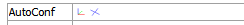
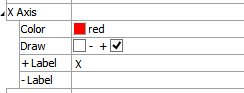
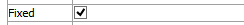
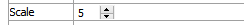
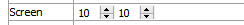
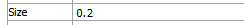
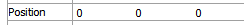
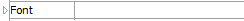

坐标轴绘图项
说明
指示绘图当前方向的坐标轴。
坐标轴随模型旋转。此绘图项是交互式的，这意味着可以通过用鼠标点击它来调整其大小和位置。坐标轴可以固定在屏幕上的某个位置，也可以固定在空间中的实际位置。
属性
自动配置（Autoconf） X 轴（以及 Y 轴和 Z 轴）（X Axis (and Y Axis and Z Axis)） 固定（Fixed） 比例（Scale） 屏幕（Screen） 大小（Size） 位置（Position） 字体（Font） 透明度（Transparency） 图例（Legend）
自动配置

选择应渲染哪种类型的坐标轴。
自动配置：使用所示图标将坐标轴显示为 x、y、z 轴或罗盘方位点（属性字段中的图像是按钮；点击所需图标即可显示首选的坐标轴类型）。
X 轴（以及 Y 轴和 Z 轴）

提供对绘图项中 \(x\) 轴部分的颜色、范围和标签的控制（\(y\) 轴和 \(z\) 轴的控制项相同）。
颜色：指定坐标轴的颜色。
绘制：指定渲染坐标轴正向臂、负向臂、两者还是均不渲染。
+ 标签：指定应用于坐标轴正向臂的标签文本。
- 标签：指定应用于坐标轴负向臂的标签文本。
固定

确定坐标轴位置是固定的，还是在模型空间中设置的。
固定：勾选后，坐标轴固定在屏幕上的某个位置（使用 scale 和 screen 属性）；取消勾选后，坐标轴在模型空间中定位（使用 size 和 position 属性）。
比例

设置绘图项的大小。
比例：将绘图项大小设为程序窗口大小的指定百分比（另见 screen 属性）。
屏幕

定位绘图项。
屏幕：以屏幕坐标指定绘图项中心的 \(x\) 和 \(y\) 位置（0, 0 = 渲染区域的左下角；100, 100 = 右上角）。另见 scale 属性。
大小

设置绘图项的大小。
大小：以模型范围的百分比指定项目大小（1 = 100%）。另见 position 属性。
位置

定位绘图项。
位置：以模型单位设置绘图项中心的 \(x\)、\(y\) 和 \(z\) 位置。另见 size 属性。

字体
设置与该项目配合使用的文本的属性。详情请参见标准的 字体（font） 控件说明。
透明度

设置绘图项的透明度。详情请参见标准的 透明度（transparency） 控件说明。
图例

设置绘图图例中该项目的标签。详情请参见标准的 图例（legend） 控件说明。
| 这些内容对您有帮助吗？… 版权与免责声明 |
FLAC3D © 2019, Itasca | 原文更新于 2020 年 10 月 8 日 |